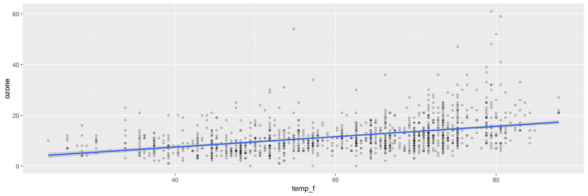
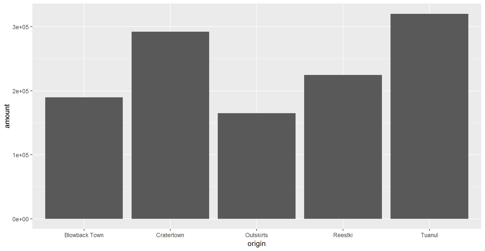

R Training | Day 2
Good morning Jedis!

Schedule
- Review
- Example work flow
- Explore your data tables
- Arrange and filter data
- Join two tables together - by one or more variables
- Add a new column calculated from other columns
- Save data
- Make heatmaps to find the Electro-stormReview Day 1
- We kicked off with a tour of RStudio.

- And jumped into storing values, naming objects, and how to remove objects from the environment.
- We made lists with
c() - We brought lists together into a table, also known as a
data frameortibble.


- We installed new packages
- Read in scrap data from online using
read_csv() - And made our first plot with the
ggplot()function from the ggplot2 package
Example workflow
Here’s an example air monitoring project from start to finish.
EXAMPLE Ozone data project
Imagine we just received 3 years worth of ozone monitoring data to summarize. Fun! Below is an example workflow we might follow using R.
0. Start a new project
Let’s be creative and name our project: "2019_Ozone"
1. Read the data
library(readr)
# Read a file from the web
air_data <- read_csv("https://itep-r.netlify.com/data/OZONE_samples_demo.csv")| SITE | Date | OZONE | TEMP_F |
|---|---|---|---|
| 27-137-7001 | 2017-04-15 | 10 | 30.2 |
| 27-137-7001 | 2016-10-24 | 13 | 59.0 |
| 27-137-7554 | 2017-06-22 | 7 | 56.6 |
| 27-137-7554 | 2018-09-01 | 9 | 68.0 |
| 27-137-7554 | 2017-08-12 | 23 | 75.2 |
2. Clean the names
library(janitor)
# Capital letters and spaces make things more difficult
# Let's clean them out
air_data <- clean_names(air_data)3. Plot the data
library(ggplot2)
ggplot(air_data, aes(x = temp_f, y = ozone)) +
geom_point(alpha = 0.2) +
geom_smooth(method = "lm")
4. Clean the data
library(dplyr)
# Drop values out of range
air_data <- air_data %>% filter(ozone > 0, temp_f < 199)
# Convert all samples to PPB
air_data <- air_data %>%
mutate(OZONE = ifelse(units == "PPM", ozone * 1000,
ozone)) 5. View the data closer
ggplot(air_data, aes(x = temp_f, y = ozone)) +
geom_point(alpha = 0.2, size = 3) +
geom_smooth(method = "lm") +
facet_wrap(~site) +
labs(title = "Ozone increases with temperature",
subtitle = "Observations from 2015-2017")6. Summarize the data
air_data <- air_data %>%
group_by(site, year) %>%
summarize(avg_ozone = mean(ozone) %>% round(2),
avg_temp = mean(temp_f) %>% round(2))| site | year | avg_ozone | avg_temp |
|---|---|---|---|
| 27-137-7001 | 2016 | 11.01 | 60.74 |
| 27-137-7001 | 2017 | 11.26 | 60.66 |
| 27-137-7001 | 2018 | 11.54 | 60.59 |
| 27-137-7554 | 2016 | 12.23 | 61.23 |
| 27-137-7554 | 2017 | 11.81 | 60.98 |
| 27-137-7554 | 2018 | 12.87 | 61.02 |
7. Save the results
Save the final data table
air_data %>% write_csv("results/2015-17_ozone_summary.csv")Save the site plot to PDF
ggsave("results/2015-2017 - Ozone vs Temp.pdf")8. Share with friends

Having an exact record of what you did can be great documentation for yourself and others. It’s also handy when you want to repeat the same analysis on new data. Then you only need to copy the script, update the read data line, and push run to get a whole new set of fancy charts.
QUESTIONS
Any questions? Any questions at all. No matter how large or terribly small… Last chance, we are about to move on…
Read scrap data
It’s time to jump back in to where we left off on Day 1.
# Read in scrap data and set name to "scrap"
scrap <- read_csv("https://itep-r.netlify.com/data/starwars_scrap_jakku.csv")Plot scrap data
Last time we made a column plot showing the amount of scrap coming from each town.
library(ggplot2)
ggplot(scrap, aes(y = amount, x = origin)) +
geom_col() +
theme_gray()Data exploration
1 | dplyr

The dplyr package is our go-to tool for exploring, re-arranging, and summarizing data. Use install.packages("dplyr") to add dplyr to your library.
Functions to get to know your data.
| Function | Information |
|---|---|
names(scrap) |
column names |
nrow(...) |
number of rows |
ncol(...) |
number of columns |
summary(...) |
summary of all column values (ex. max, mean, median) |
glimpse(...) |
column names + a glimpse of first values (requires dplyr package) |
2 | glimpse() the columns
Use the glimpse() function to find out what type and how much data you have.
Use the summary() function to get a quick report on your numeric data.
Let’s read the data into R and give these a whirl.
library(dplyr)
library(readr)
scrap <- read_csv("https://itep-r.netlify.com/data/starwars_scrap_jakku.csv")
# View your whole dataframe and the types of data it contains
glimpse(scrap)## Observations: 1,132
## Variables: 7
## $ receipt_date <chr> "4/1/2013", "4/2/2013", "4/3/2013", "4/4/2013"...
## $ item <chr> "Flight recorder", "Proximity sensor", "Vitus-...
## $ origin <chr> "Outskirts", "Outskirts", "Reestki", "Tuanul",...
## $ destination <chr> "Niima Outpost", "Raiders", "Raiders", "Raider...
## $ amount <dbl> 887, 7081, 4901, 707, 107, 32109, 862, 13944, ...
## $ units <chr> "Tons", "Tons", "Tons", "Tons", "Tons", "Tons"...
## $ price_per_pound <dbl> 590.93, 1229.03, 225.54, 145.27, 188.28, 1229....# Use the summary function to get a quick of idea of means and maxima for your numeric data
summary(scrap)## receipt_date item origin
## Length:1132 Length:1132 Length:1132
## Class :character Class :character Class :character
## Mode :character Mode :character Mode :character
##
##
##
##
## destination amount units
## Length:1132 Min. : 65 Length:1132
## Class :character 1st Qu.: 1544 Class :character
## Mode :character Median : 4099 Mode :character
## Mean : 18751
## 3rd Qu.: 7475
## Max. :2971601
## NA's :910
## price_per_pound
## Min. : 145.3
## 1st Qu.: 259.6
## Median : 790.7
## Mean : 3811.7
## 3rd Qu.: 1496.7
## Max. :579215.3
## NA's :910# Try the rest on your own, I dare you!
nrow()
ncol()
names()More dplyr
Dplyr is our go-to package for most analysis tasks. With the six functions below you can accomplish just about anything you’d want to do with data.
Your new analysis toolbox
Function Job select()Select individual columns to drop or keep arrange()Sort a table top-to-bottom based on the values of a column filter()Keep only a subset of rows depending on the values of a column mutate()Add new columns or update existing columns summarize()Calculate a single summary for an entire table group_by()Sort data into groups based on the values of a column
3 | Porg tables
A poggle of porgs has volunteered to help us demo the dplyr functions.


4 | select()
Use the select() function to:
- Drop a column you no longer need
- Pull-out a few columns to create a new table
- Rearrange or change the order of columns
Drop columns with a minus sign: -column_name
library(dplyr)
library(readr)
scrap <- read_csv("https://itep-r.netlify.com/data/starwars_scrap_jakku.csv")
# Drop the destination column
select(scrap, -destination)## # A tibble: 1,132 x 6
## receipt_date item origin amount units price_per_pound
## <chr> <chr> <chr> <dbl> <chr> <dbl>
## 1 4/1/2013 Flight recorder Outskir~ 887 Tons 591.
## 2 4/2/2013 Proximity sensor Outskir~ 7081 Tons 1229.
## 3 4/3/2013 Vitus-Series Attitud~ Reestki 4901 Tons 226.
## 4 4/4/2013 Aural sensor Tuanul 707 Tons 145.
## 5 4/5/2013 Electromagnetic disc~ Tuanul 107 Tons 188.
## 6 4/6/2013 Proximity sensor Tuanul 32109 Tons 1229.
## 7 4/7/2013 Hyperdrive motivator Tuanul 862 Tons 1485.
## 8 4/8/2013 Landing jet Reestki 13944 Tons 1497.
## 9 4/9/2013 Electromagnetic disc~ Cratert~ 7788 Tons 188.
## 10 4/10/2013 Sublight engine Outskir~ 10642 Tons 7211.
## # ... with 1,122 more rowsKeep only three columns
# Keep the item, amount and price_per_pound columns
select(scrap, c(item, amount, price_per_pound))## # A tibble: 1,132 x 3
## item amount price_per_pound
## <chr> <dbl> <dbl>
## 1 Flight recorder 887 591.
## 2 Proximity sensor 7081 1229.
## 3 Vitus-Series Attitude Thrusters 4901 226.
## 4 Aural sensor 707 145.
## 5 Electromagnetic discharge filter 107 188.
## 6 Proximity sensor 32109 1229.
## 7 Hyperdrive motivator 862 1485.
## 8 Landing jet 13944 1497.
## 9 Electromagnetic discharge filter 7788 188.
## 10 Sublight engine 10642 7211.
## # ... with 1,122 more rowseverything()
select() also works to change the order of columns. The code below puts the item column first and then moves the units and amount columns directly after item. We then keep everything() else the same.
# Make the `item`, `units`, and `amount` columns the first three columns
# Leave `everything()` else in the same order
select(scrap, item, units, amount, everything()) %>% head()## # A tibble: 6 x 7
## item units amount receipt_date origin destination price_per_pound
## <chr> <chr> <dbl> <chr> <chr> <chr> <dbl>
## 1 Flight rec~ Tons 887 4/1/2013 Outski~ Niima Outp~ 591.
## 2 Proximity ~ Tons 7081 4/2/2013 Outski~ Raiders 1229.
## 3 Vitus-Seri~ Tons 4901 4/3/2013 Reestki Raiders 226.
## 4 Aural sens~ Tons 707 4/4/2013 Tuanul Raiders 145.
## 5 Electromag~ Tons 107 4/5/2013 Tuanul Niima Outp~ 188.
## 6 Proximity ~ Tons 32109 4/6/2013 Tuanul Trade cara~ 1229.5 | arrange()
Rey wants to know what the highest priced items are. Use arrange() to find the highest priced scrap item and see which origins might have a lot of them.
# Arrange scrap items by price
scrap <- arrange(scrap, price_per_pound)
# View the top 6 rows
head(scrap)## # A tibble: 6 x 7
## receipt_date item origin destination amount units price_per_pound
## <chr> <chr> <chr> <chr> <dbl> <chr> <dbl>
## 1 4/4/2013 Aural se~ Tuanul Raiders 707 Tons 145.
## 2 5/22/2013 Aural se~ Outskirts Niima Outp~ 3005 Tons 145.
## 3 5/23/2013 Aural se~ Tuanul Raiders 6204 Tons 145.
## 4 6/4/2013 Aural se~ Tuanul Raiders 3120 Tons 145.
## 5 6/10/2013 Aural se~ Blowback~ Niima Outp~ 2312 Tons 145.
## 6 6/20/2013 Aural se~ Outskirts Trade cara~ 6272 Tons 145.Only 145 credits! That’s not very much at all, oh wait…
Big things first: desc()
To arrange a column in descending order with the biggest numbers on top, we use: desc(price_per_pound)
# Put most expensive items on top
scrap <- arrange(scrap, desc(price_per_pound))
# View the top 8 rows
head(scrap, 8)## # A tibble: 8 x 7
## receipt_date item origin destination amount units price_per_pound
## <chr> <chr> <chr> <chr> <dbl> <chr> <dbl>
## 1 12/31/2016 Total All All 2.97e6 Tons 579215.
## 2 4/10/2013 Sublight~ Outskirts Niima Outp~ 1.06e4 Tons 7211.
## 3 4/14/2013 Sublight~ Outskirts Raiders 2.38e3 Tons 7211.
## 4 4/15/2013 Sublight~ Craterto~ Raiders 6.31e3 Tons 7211.
## 5 4/16/2013 Sublight~ Tuanul Trade cara~ 3.98e3 Tons 7211.
## 6 5/14/2013 Sublight~ Craterto~ Raiders 2.99e2 Tons 7211.
## 7 6/14/2013 Sublight~ Blowback~ Raiders 8.58e3 Tons 7211.
## 8 8/6/2013 Sublight~ Craterto~ Raiders 1.77e3 Tons 7211.Exercise
Try arranging by more than one column, such as price_per_pound and amount. What happens?
HINT: You can view the entire table by clicking on it in the upper-right Environment tab.
Pro-tip!
When you save an arranged data table it maintains its order. This is perfect for sending people a quick Top 10 list of pollutants or sites.
6 | filter()
The filter() function creates a subset of the data based on the value of one or more columns. Let’s take a look at the records with the origin "All".
filter(scrap, origin == "All")## # A tibble: 1 x 7
## receipt_date item origin destination amount units price_per_pound
## <chr> <chr> <chr> <chr> <dbl> <chr> <dbl>
## 1 12/31/2016 Total All All 2971601 Tons 579215.Pro-tip!
Use a == (double equals sign) for comparing values. A == makes the comparison “is it equal to?” and returns a True or False answer. So the code above returns all the rows where the condition origin == "All" is TRUE.
A single equals sign = is used within functions to set options, for example read_csv(file = "starwars_scrap_jakku.csv"). Don’t worry too much. If you use the wrong symbol R is often helpful and will let you know which one is needed.
Comparisons
Processing data requires many types of filtering. You’ll want to know how to select observations in your table by making various comparisons.
Key comparison operators
| Symbol | Comparison |
|---|---|
> |
greater than |
>= |
greater than or equal to |
< |
less than |
<= |
less than or equal to |
== |
equal to |
!= |
NOT equal to |
%in% |
is value in a list: X %in% c(1,3,5) |
is.na(...) |
Is the value missing? |
Exercise
Try comparing some things in the console and see if you get what you’d expect. R doesn’t always think like we do.
4 != 5
4 == 4
4 < 3
4 > c(1, 3, 5)
5 == c(1, 3, 5)
5 %in% c(1, 3, 5)
2 %in% c(1, 3, 5)
2 == NADropping rows
Let’s look at the data without that pesky All category. Look in the comparison table above to find the NOT operator. We’re going to filter the data to keep only the origins that are NOT equal to “All”.
scrap <- filter(scrap, origin != "All")We can arrange the data in ascending order by item to confirm that the “All” category is gone.
# Arrange data
scrap <- arrange(scrap, item)
head(scrap)## # A tibble: 6 x 7
## receipt_date item origin destination amount units price_per_pound
## <chr> <chr> <chr> <chr> <dbl> <chr> <dbl>
## 1 4/4/2013 Aural se~ Tuanul Raiders 707 Tons 145.
## 2 5/22/2013 Aural se~ Outskirts Niima Outp~ 3005 Tons 145.
## 3 5/23/2013 Aural se~ Tuanul Raiders 6204 Tons 145.
## 4 6/4/2013 Aural se~ Tuanul Raiders 3120 Tons 145.
## 5 6/10/2013 Aural se~ Blowback~ Niima Outp~ 2312 Tons 145.
## 6 6/20/2013 Aural se~ Outskirts Trade cara~ 6272 Tons 145.Now let’s take another look at that bar chart. Is there anything else that is less than perfect with our data?
library(ggplot2)
ggplot(scrap, aes(x = origin, y = amount)) + geom_col()
6.1 Multiple filters
We can add multiple comparisons to filter() to further restrict the data we pull from a larger data set. Only the records that pass the conditions of all the comparisons will be pulled into the new data frame.
The code below filters the data to only scrap records with an origin of Outskirts AND a destination of Niima Outpost.
outskirts_to_niima <- filter(scrap,
origin == "Outskirts",
destination == "Niima Outpost")Guess Who?
Star Wars edition

Are you the best Jedi detective out there? Let’s play a game to find out.
Guess what else comes with the dplyr package? A Star Wars data set.
You can open the data set with the following steps:
- Load the
dplyrpackage from yourlibrary() - Pull the Star Wars dataset into your environment.
library(dplyr)
starwars_data <- starwarsRules
- You have a secret identity.
- Scroll through the Star Wars dataset and find a character you find interesting. (Or run
sample_n(starwars_data, 1)to choose your character at random.) - Keep it hidden! Don’t show your neighbor the character you chose.
- Take turns asking each other questions about your partner’s Star Wars character.
- Use the answers to build a
filter()function and narrow down the potential characters your neighbor may have picked.
For example: Here’s a filter() statement that filters the data to the character Plo Koon.
mr_koon <- filter(starwars_data,
mass < 100,
eye_color != "blue",
gender == "male",
homeworld == "Dorin",
birth_year > 20)Elusive answers are allowed. For example, if someone asks: What is your character’s mass?
- You can respond: My character’s mass is equal to one less than their age.
- Or if you’re feeling generous you can give a straight forward answer such as: My character’s mass is definitely more than 100 and less that 140.
Sometimes a character will not have a specific attribute. We learned earlier how R stores nulls as NA. If your character has a missing value for hair color, one of your filter statements could be is.na(hair_color).
WINNER!
The winner is the first to guess their neighbor’s character.
WINNERS Click here!

Want to rematch?
How about make it best of 3 games? Or switch partners and try again.
Mystery messenger
An unknown someone was sent to Jakku to deliver Rey a message, but unfortunately we only have a few clues about what they look like. Work with your partner and the starwars data to find the messenger’s name. And with that, BB8 can track down where our messenger is.
Are you ready? The clock starts… ticking… now.
- Step 1: Ask Derek for the clues.
Back to Jakku
Let’s calculate some new columns to help focus Rey’s scavenging work.
7 | mutate()
mutate() can edit existing columns in a data frame or add new columns calculated from neighboring columns.
Add a column
First, let’s add a column with our names. That way Rey can thank us personally when her ship is finally up and running.
# Add your name as a column
scrap <- mutate(scrap, scrap_finder = "BB8")Add several columns
Let’s also add a new column to document the data measurement method.
# Add your name as a column and
# some information about the method
scrap <- mutate(scrap,
scrap_finder = "BB8",
measure_method = "REM-24")
## REM = Republic Equivalent MethodChange a column
Remember how the units of Tons was written two ways: “TONS” and “Tons”? We can use mutate() together with tolower() to make sure all of the scrap units are written in lower case. This will help prevent them from getting grouped separately in our plots and summaries.
# Set units to all lower-case
scrap <- mutate(scrap, units = tolower(units))
# toupper() changes all of the letters to upper-case.Add calculated columns
In our work we often use mutate to convert units for measurements. In this case, let’s estimate the total pounds for the scrap items that are reported in tons.
Tons to Pounds conversion
We can use mutate() to convert the amount column to pounds. Multiply the amount column by 2000 to get new values for a column named amount_lbs.
scrap_pounds <- mutate(scrap, amount_lbs = amount * 2000)Final stretch!
It’s time to get off this dusty planet and Rey needs an Ion engine. Let’s filter the data to only that type of item.
Show code
# Grab only the items named "Ion engine"
scrap_pounds <- filter(scrap_pounds, item == "Ion engine")Arrange the data in descending order of pounds so Rey knows where the highest amount of scrap comes from. Then she can go there, trade for some discounted parts and we’re free to FLY TO ENDOR!
Show code
# Arrange data
scrap_pounds <- arrange(scrap_pounds, desc(amount_lbs))
# Return the origin of the highest amount_lbs of scrap
head(scrap_pounds, 1)
# Plot the total amount_lbs by origin
ggplot(scrap_pounds, aes(x = origin, y = amount_lbs)) +
geom_col()Pop Quiz!
For the item Ion engine, which origin has the highest amount_lbs?
Tuanul
Cratertown
Outskirts
Reestki
Show solution
Cratertown
Yes!! You receive the ship parts to repair Rey’s Millennium Falcon. Onward!
First mission complete!
8 | Save data
You can’t break your original dataset if you always name it something else. Let’s use the readr package to save our new CSV with the tons converted to pounds.
# Save data as a CSV file
write_csv(scrap_pounds, "scrap_in_pounds.csv")Where did R save the file?
Let’s create a new results/ folder to keep our processed data separate from any raw data we receive.
# Save data as a CSV file to results folder
write_csv(scrap_pounds, "results/scrap_in_pounds.csv")Time to get off this dusty planet, we’re flying to Endor!
BB8 has a new mission
BB8 just received new data suggesting there was a large magnetic storm right before Site 1 burned down on Endor. Sounds like we’re going to be STORM CHASERS!
Get the dataset
While we’re relaxing and flying to Endor let’s get set up with our new data.
DOWNLOAD - Endor Air data
- Download the data above.
- Create a new folder called “data” in your project folder.
- Move the Endor data to there.
- Open a new R script called
endor_air.R
Now we can read in the data from the data folder with our favorite read_csv function.
library(readr)
library(dplyr)
library(janitor)
air_endor <- read_csv("data/air_endor.csv")
names(air_endor)
# Clean the column names
air_endor <- clean_names(air_endor)
names(air_endor)## [1] "analyte" "lab_code" "units" "start_run_date"
## [5] "site_name" "long_site_name" "planet" "result"NOTE
When your project is open, RStudio sets the working directory to your project folder. When reading files from a folder outside of your project, you’ll need to use the full file path location.
For example: X://Programs/Air_Quality/Ozone_data.csv
Welcome to Endor!

Let’s get acquainted with our new Endor data set.
Remember the different ways?
Hint: summary(), glimpse(), nrow(), distinct
glimpse(air_endor)## Observations: 1,190
## Variables: 8
## $ analyte <chr> "1-Methylnaphthalene", "1-Methylnaphthalene", "...
## $ lab_code <chr> "HV-403", "HV-408", "HV-411", "HV-415", "HV-418...
## $ units <chr> "ng/m3", "ng/m3", "ng/m3", "ng/m3", "ng/m3", "n...
## $ start_run_date <chr> "7/11/2016", "7/23/2016", "8/5/2016", "8/16/201...
## $ site_name <chr> "battlesite1", "battlesite1", "battlesite1", "b...
## $ long_site_name <chr> "Endor_Tana_forestmoon_battlesite1", "Endor_Tan...
## $ planet <chr> "Endor", "Endor", "Endor", "Endor", "Endor", "E...
## $ result <dbl> 0.00291, 0.00000, 0.00000, 0.00608, 0.00000, 0....distinct(air_endor, analyte)## # A tibble: 27 x 1
## analyte
## <chr>
## 1 1-Methylnaphthalene
## 2 2-Methylnaphthalene
## 3 5-Methylchrysene
## 4 Acenaphthene
## 5 Anthanthrene
## 6 Benz[a]anthracene
## 7 Benzo[a]pyrene
## 8 Benzo[c]fluorene
## 9 Benzo[e]pyrene
## 10 Benzo[g,h,i]perylene
## # ... with 17 more rowsWoah. I see that there are many more analytes than we need. Lucky for us, we only want to know about magnetic_field data. Let’s filter the data down to only that analyte.
mag_endor <- filter(air_endor, analyte == "magnetic_field")Boom! How many rows are left now?
With time series data it’s helpful for R to know which column is the date column. Dates come in many formats and the standard format in R is 2019-01-15, also referred to as Year-Month-Day format.
We’ll use the lubridate package to help modify and format dates.
9 | Dates
The lubridate package

It’s about time! Lubridate makes working with dates easier.
We can find how much time has elapsed, add or subtract days, and find seasonal and day of the week averages.
Convert text to a DATE
| Function | Order of date elements |
|---|---|
mdy() |
Month-Day-Year :: 05-18-2019 or 05/18/2019 |
dmy() |
Day-Month-Year (Euro dates) :: 18-05-2019 or 18/05/2019 |
ymd() |
Year-Month-Day (science dates) :: 2019-05-18 or 2019/05/18 |
ymd_hm() |
Year-Month-Day Hour:Minutes :: 2019-05-18 8:35 AM |
ymd_hms() |
Year-Month-Day Hour:Minutes:Seconds :: 2019-05-18 8:35:22 AM |
Get date parts
| Function | Date element |
|---|---|
year() |
Year |
month() |
Month as 1,2,3; For Jan, Feb, Mar use label=TRUE |
day() |
Day of the month |
wday() |
Day of the week as 1,2,3; For Sun, Mon, Tue use label=TRUE |
| - Time - | |
hour() |
Hour of the day (24hr) |
minute() |
Minutes |
second() |
Seconds |
tz() |
Time zone |
Install lubridate
First, type or copy and paste install.packages("lubridate") into RStudio.
Clean the dates
Let’s use the mdy() function to turn the start_run_date column into a nicely formatted date.
library(lubridate)
mag_endor <- mutate(mag_endor, date = mdy(start_run_date),
year = year(date))According to the request we received, the Resistance is only interested in observations from the year 2017. So let’s filter the data down to only dates within that year.
mag_endor <- filter(mag_endor, year == "2017")Time series
ggplot(mag_endor, aes(x = date, y = result)) +
geom_line(size = 2, color = "tomato") +
geom_point(size = 5, alpha = 0.5) # alpha changes transparencyLooks like the measurements definitely picked up a signal towards the end of the year. Let’s make a different chart to show when this occurred.
Heatmap or calendar plot
Sometimes with air data we want to know if there is seasonality in the data, this is also true for magnetic storm data from Endor. Calendar plots are great for this.
We will use ggplot() and bring out the geom_tile() to organize our data by dates and find when and if that storm happened.
First, we’ll pull more information out of the dates.
mag_endor <- mutate(mag_endor,
day_of_week = wday(date, label = TRUE),
day_of_month = mday(date),
week_of_month = day(date)/7,
month = month(date, label = TRUE))ggplot(mag_endor, aes(x = day_of_week, y = desc(week_of_month), fill = result)) +
geom_tile(color = "gray") +
geom_label(aes(label = day_of_month), size = 8, color = "white") +
facet_wrap("month")Mission complete!
Aha! There really were high magnetic field readings in November. Hopefully, the Resistance will reward us handsomely for this information.
10 | The pipe operator
…I wish I could type the name of the data frame less often.

Now you can!
We use the %>% to chain functions together and make our scripts more streamlined. We call it the pipe.
Here are 2 examples of how the %>% operator is helpful.
#1: It eliminates the need for nested parentheses.
Say you wanted to take the sum of 3 numbers and then take the log and then round the final result.
round(log(sum(c(10,20,30,40))))The code doesn’t look much like the words we used to describe it. Let’s pipe it so we can read the code from left to right.
c(10,20,30,50) %>% sum() %>% log10() %>% round()#2: We can combine many processing steps into one cohesive chunk.
Here are some of the functions we’ve applied to the scrap data so far:
scrap <- arrange(scrap, desc(price_per_pound))
scrap <- filter(scrap, origin != "All")
scrap <- mutate(scrap,
scrap_finder = "BB8",
measure_method = "REM-24")We can use the %>% operator and write it this way.
scrap <- scrap %>%
arrange(desc(price_per_pound)) %>%
filter(origin != "All") %>%
mutate(scrap_finder = "BB8",
measure_method = "REM-24")Exercise
Similar to above, use the %>% to combine the two Endor lines below.
mag_endor <- filter(air_endor, analyte == "magnetic_field")
mag_endor <- mutate(mag_endor, date = mdy(start_run_date))